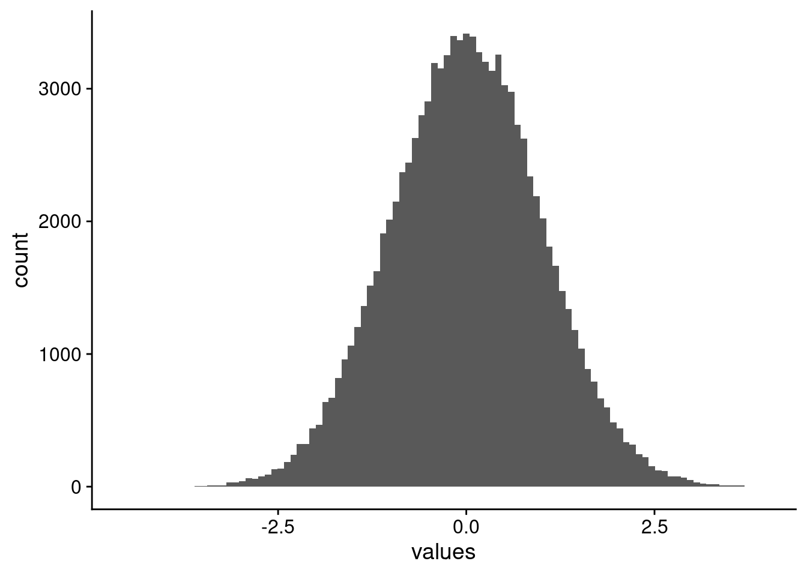
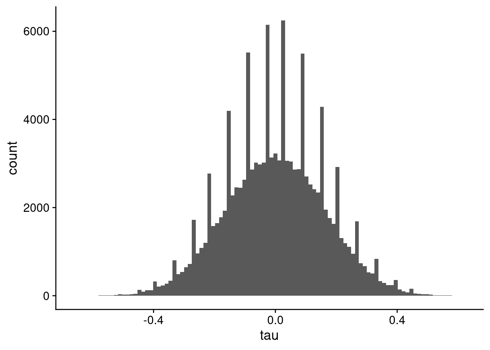

![]()
TL;DR
Using kendall-tau on a lot of features, with lower numbers of samples to calculate the correlation across, may result in very weird looking histograms of the correlation values. This is due to kendall-tau being based on comparisons of ranks, and the low number of samples creates only so many paired rank comparisons.
The Problem
I was recently doing an analysis of correlating gene expression based on transcriptomics to metabolomics, and saw a very weird pattern in the distribution of correlation values, where there are spikes of high numbers of counts. Although it is not the actual plot I observed, it was very, very similar to that shown in Figure 1.
What I was expecting to get, is something closer to what is shown in Figure 2.
So let’s setup some data to get a handle on this.
Example Data
We load a couple of libraries to get going. {ICIKendallTau} for speedy Kendall-tau correlation calculations, and {ggplot2} because I prefer the plot style. We will use a moderately high feature dataset, with a large number of samples to start. Because we aren’t worried about what range of correlations we want to have, we can also just use a whole lot of normally distributed data. Finally, we want to set the seed so we get the same image every time. Just so we can see it, the histogram of data values are shown in Figure 3.
library(ICIKendallTau)
library(ggplot2)
set.seed(1234)
n_feature = 500
n_sample = 200
example_data = matrix(rnorm(n_feature * n_sample, mean = 0, sd = 1),
nrow = n_sample,
ncol = n_feature)example_df = data.frame(values = as.vector(example_data))
example_df |>
ggplot(aes(x = values)) +
geom_histogram(bins = 100)

Correlations
For correlations, we are using the Kendall-tau correlation. If you don’t know how it is different from Pearson or Spearman, I definitely recommend reading up on it (Wikipedia, n.d.). In a nutshell, it is rank based, and in particular, comparing all the ranks of pairs between the two things being compared. This naturally leads to a finite number of comparisons that can be done. For example, if there are 10 values in two samples, then there will be \(10 \choose 2\), or 45 pairs of ranks to compare.
Big Example
So, let’s start by computing the correlations between all 500 features here (genes, metabolites, you name it) using all 200 samples, and plotting them in Figure 4. For 200 samples, we have 19,900 pairs of ranks.
kt_all = kt_fast(example_data, return_matrix = FALSE)$tau
kt_all = kt_all |>
dplyr::filter(!(s1 == s2))
kt_all |>
ggplot(aes(x = tau)) +
geom_histogram(bins = 100)Small Example
Now, we will calculate the correlations using a lower number of samples. In my data for work, I had 12. But for our example, even 20 will suffice. For 20 samples, we have 190 pairs of ranks in the correlation. The histogram of values is shown in Figure 5. Notice the spikes of bins of correlation values over the whole distribution.
sample_rows = sample(nrow(example_data), 20)
kt_small = kt_fast(example_data[sample_rows, ], return_matrix = FALSE)$tau
kt_small = kt_small |>
dplyr::filter(!(s1 == s2))
kt_small |>
ggplot(aes(x = tau)) +
geom_histogram(bins = 100)

You don’t see the spikes if you use a lower number of bins in the histogram, as shown in Figure 6.
kt_small |>
ggplot(aes(x = tau)) +
geom_histogram(bins = 30)Pearson
Pearson (and Spearman) correlation don’t suffer the same issues, as they are parametric correlation methods based on the covariances of the variables. Even for our low number of samples case, the Pearson correlation distribution looks great in Figure 7.
p_small = cor(example_data[sample_rows, ])
p_small_df = data.frame(Correlation = as.vector(p_small))
p_small_df = p_small_df |>
dplyr::filter(!(Correlation == 1))
p_small_df |>
ggplot(aes(x = Correlation)) +
geom_histogram(bins = 100)
Why Kendall-tau?
I’m using Kendall-tau for this work because we have a modified Kendall-tau, information-content-informed Kendall-tau (ICI-Kt) that is able to incorporate missingness into the correlation calculation (Flight, Bhatt, and Moseley 2022).
References
Flight, Robert M., Praneeth S. Bhatt, and Hunter NB Moseley. 2022. “Information-Content-Informed Kendall-Tau Correlation: Utilizing Missing Values.” https://doi.org/10.1101/2022.02.24.481854.
Wikipedia. n.d. “Kendall Rank Correlation Coefficient.” https://en.wikipedia.org/wiki/Kendall_rank_correlation_coefficient.
Reuse
Citation
BibTeX citation:
@online{m flight2024,
author = {M Flight, Robert},
title = {Weird {Correlation} {Patterns}},
date = {2024-04-03},
url = {https://rmflight.github.io/posts/2024-04-03-weird-correlation-patterns},
langid = {en}
}
For attribution, please cite this work as:
M Flight, Robert. 2024. “Weird Correlation Patterns.” April
3, 2024. https://rmflight.github.io/posts/2024-04-03-weird-correlation-patterns.